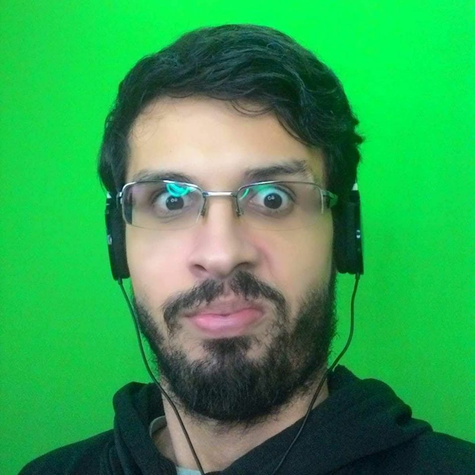

<ion-header>
  <ion-navbar>
    <ion-title>perfil</ion-title>
  </ion-navbar>
</ion-header>

<ion-content>
  <ion-item no-lines>
    <div class="avatar-wrapper">
      <ion-avatar>
        
      </ion-avatar>

      <button class="btn-tirar-foto" ion-button icon-only round>
        <ion-icon name="camera"></ion-icon>
      </button>
    </div>
  </ion-item>
  <ion-card>
    <ion-item>
      <ion-icon name="contact" item-left></ion-icon>
      Gustavo Delfino
    </ion-item>

    <ion-item>
        <ion-icon name="calendar" item-left></ion-icon>
        <p>15/11/1998</p>
      </ion-item>

      <ion-item>
          <ion-icon name="at" item-left></ion-icon>
          <p>gustavo.delfino@gmail.com</p>
      </ion-item>

      <ion-item>
          <ion-icon name="call" item-left></ion-icon>
          <p>11 952790367</p>
        </ion-item>

  </ion-card>

</ion-content>
